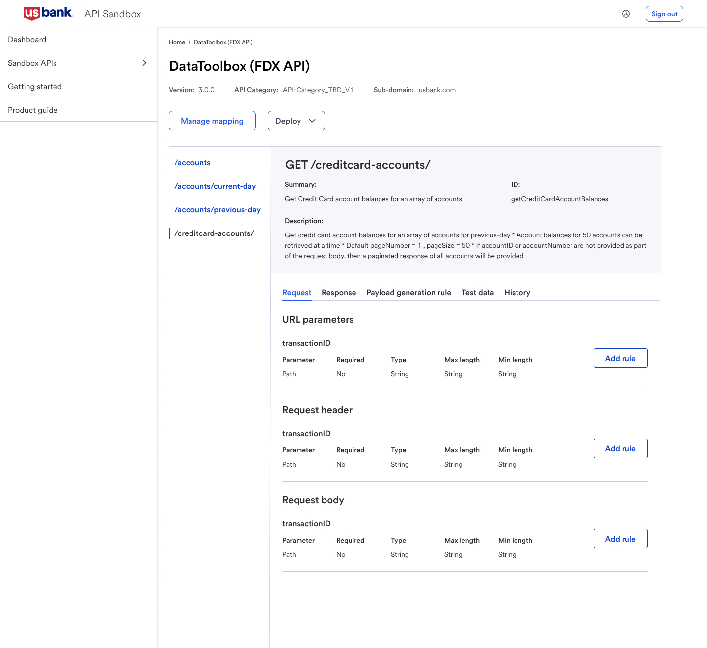
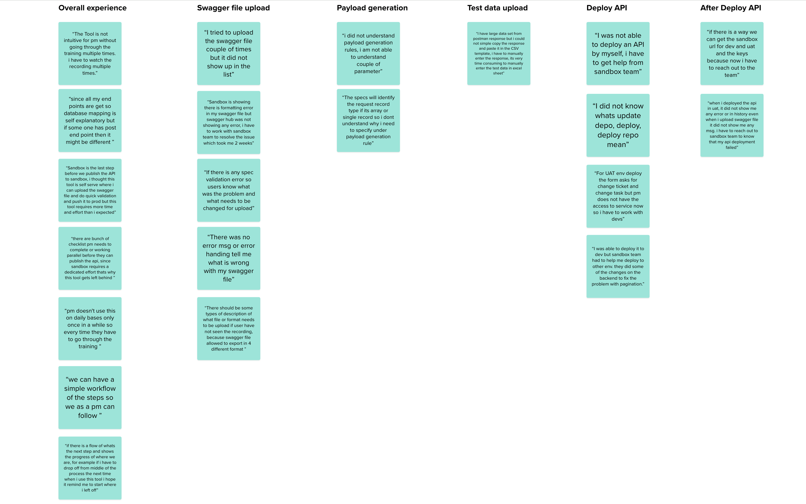
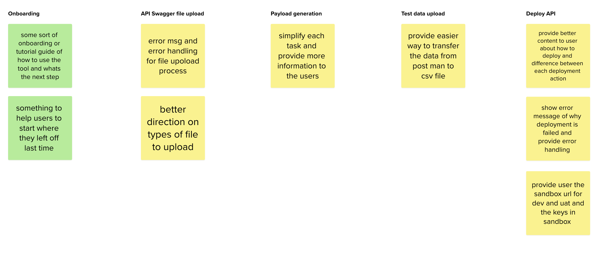
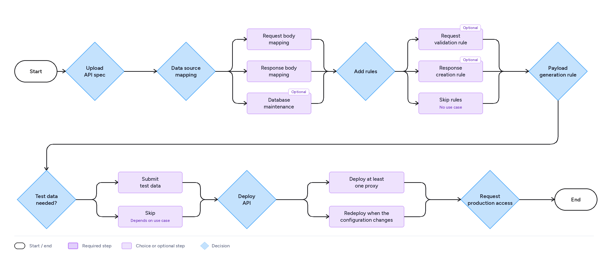
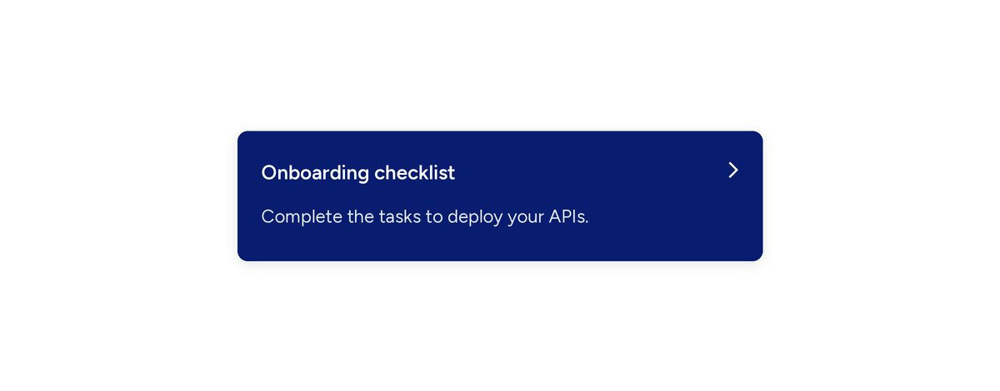
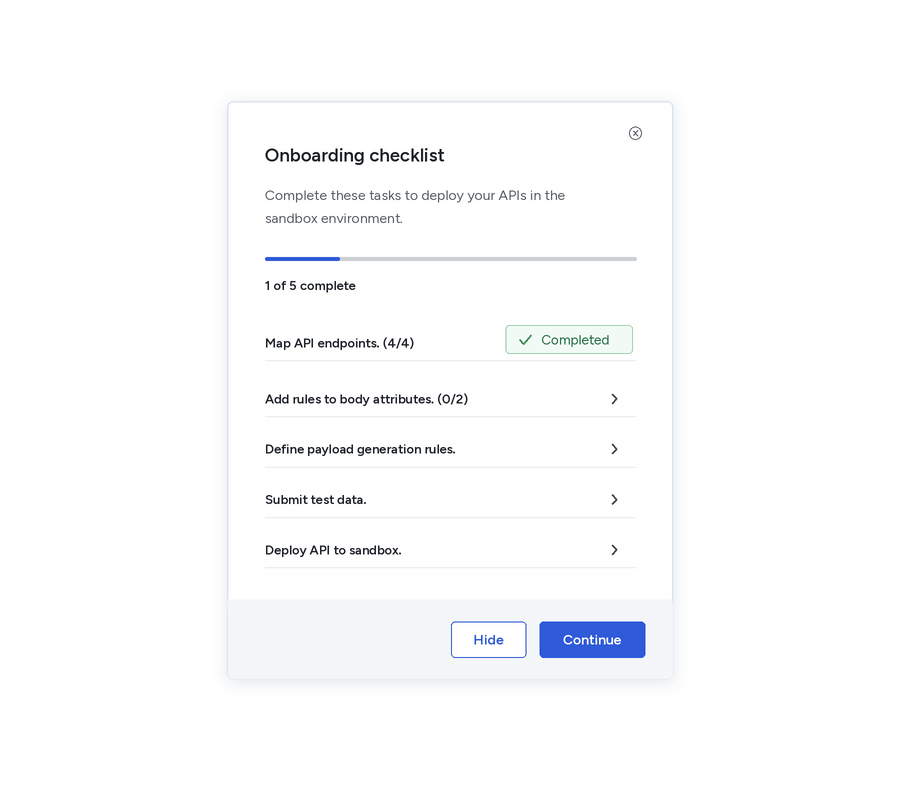

API Sandbox
2021-2024
API Sandbox is an internal tool where product managers upload API specs and create simulated responses to test APIs before they go live. Over three years, I designed many of its features end to end, including database mapping, payload generation, and test data. This case study walks through one of them, the onboarding checklist.

The problem
API Sandbox is powerful, but product managers don’t use it every day. Most come in once in a while, so they relearn the tool each time. For a first-time PM, setup took a few weeks and needed constant help from the sandbox team. When they got stuck, they watched training videos again and then reached out for support. That meant low adoption, and a sandbox team that spent more time answering questions than improving the tool.
The research
I started broad, then went deep. A short survey told me how PMs were using the tool and who was struggling. From those responses, I picked PMs to interview one on one and watch them walk through the tool.
Step 1: Survey
I sent a short survey to PMs who use the tool. It asked about their experience level, whether they had deployed an API on their own, and how easy the tool was to use, each with a “please explain” follow-up. The answers showed who was comfortable and who was stuck, and gave me a shortlist of PMs to interview.
Step 2: One-on-one interviews
In the interviews, I took PMs through the main flow, from landing on the page to deploying. I asked what they expected at each step, what they did next, and where they got lost. This surfaced things the survey couldn’t: PMs didn’t know what to do after uploading a spec, weren’t sure what database mapping was for, and didn’t understand terms like “deploy” and “request body.”
What I learned
No guidance for first-timers
PMs had to complete the training several times before the tool made sense. Nothing inside the product told them where to start.
Easy to lose your place
Because PMs use the tool occasionally, they forgot where they’d stopped. Several asked for a simple, followable list of steps.
Errors that didn’t explain themselves
When a spec file failed to upload or a deployment failed, the message didn’t say what was wrong or how to fix it.
Unclear deployment terms
Words like “deploy,” “update,” and “request body” weren’t obvious, and PMs weren’t sure what each deployment option would do.


Design goals
Guide PMs step by step
Put the “how to” inside the product so PMs don’t need to leave and rewatch training.
Let PMs pick up where they left off
Save progress and always show the next step, so coming back after weeks feels easy.
Simplify each task
Give clear, plain-language information at each step, and errors that say what went wrong and how to fix it.
Explain deployment
Make deployment options and what happens after deploying easy to understand.
Mapping the journey
I worked with the product and development teams to map every step of deploying an API, from uploading a spec to going live. Some steps are required, while others depend on the use case, so the checklist needed to adapt instead of forcing everyone down one path.

The solution
I designed an onboarding checklist that lives inside the tool, so PMs no longer have to leave it to find training. It breaks the path from uploading a spec to deploying an API into five steps, and it remembers where each PM stopped. It works in three layers. A small floating widget shows where you left off. A checklist panel shows the whole path and your progress. A task details view gives plain-language, step-by-step help for the task in front of you. PMs can start anywhere, leave and return, and always see what to do next.
Onboarding widget
A small card floats in the corner of the tool and shows the step you’re on. Coming back after weeks away takes one glance. Tap it to open the full checklist.

Checklist panel
The checklist is a floating panel that shows all the tasks and subtasks needed to deploy an API. It doesn’t block the page, so PMs can keep working while they track their progress, and they can hide it whenever they want.
Selecting a task opens the task details view in the same panel. It gives a short introduction to the task, numbered steps, a tutorial link and a link to the product guide, so PMs get help without leaving the tool. Home takes them back to the checklist, and Continue or Mark as done moves them to the next step.

Results
The onboarding checklist shipped as part of API Sandbox. First-time PMs get a clear path from uploading a spec to deploying an API inside the tool, and returning PMs can pick up where they left off. Help now sits next to each task, so PMs no longer have to leave the tool for training videos or the sandbox team.
After release, I pivoted to other projects, so I don’t have any metrics or usage data from after launch. I’d rather say that than guess at numbers.
Want to hear more? Email me at subihamut@gmail.com